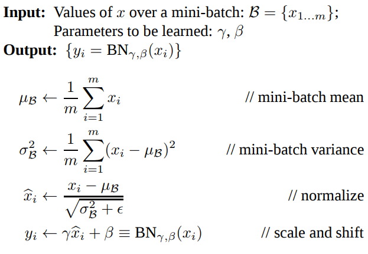
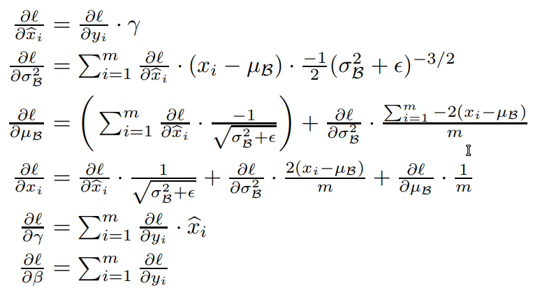
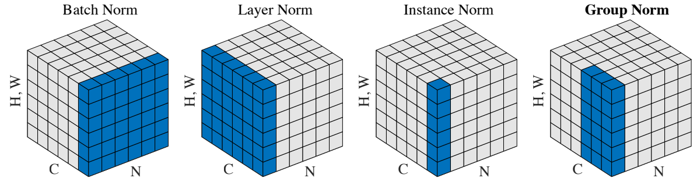

Normalization Techniques - Neural Networks
Posted on August 06, 2018
Neuron activation normalization in Deep Learning
Training state-of-the-art, deep neural networks is computationally expensive. One way to reduce the training time is to normalize the activities of the neurons. During training deep neural networks, the distribution of each layer’s inputs changes, as the parameters of the previous layers change. This makes it hard to train models with saturating non-linearities. This is called internal covariance shift which is defined as the change in the distribution of network activations due to the change in network parameters. We can reduce the internal covariate shift by fixing the distribution of the layer inputs x as the training progresses. Typically the network training converges faster if its inputs are whitened – meaning that they are linearly transformed to have zero means and unit variances, and decorrelated. However whitening the layer inputs is expensive (requires computing the covariance matrix of x). BN also alleviates headaches with properly initializing neural networks. Methods normalizing the hidden features, have been derived based on strong assumptions of feature distributions. BN for instance does this by explicitly forcing the activations throughout a network to take on a unit gaussian distribution at the beginning of the training. Batch Normalization (BN) solves this by performing input normalization in a way that is differentiable and does not require the analysis of the entire training set after every parameter update. Simply put, BN uses the distribution of the summed input to a neuron over a mini-batch of training cases to compute a mean and variance which are then used to normalize the summed input to that neuron on each training case.Batch Normalization
The equations below show the BN forward and backward pass.


The code snipped below is based on the cs231n showing the implementation of
forward and backward pass as shown in the above equations.
Note that we would insert the BatchNorm layer immediately after
fully connected layers (or convolutional layers), and before non-linearities.
def batchnorm_forward(x, gamma, beta, bn_param):
"""
Input:
- x: Data of shape (N, D)
- gamma: Scale parameter of shape (D,)
- beta: Shift paremeter of shape (D,)
- bn_param: Dictionary with the following keys:
- mode: 'train' or 'test'; required
- eps: Constant for numeric stability
- momentum: Constant for running mean / variance.
- running_mean: Array of shape (D,) giving running mean of features
- running_var Array of shape (D,) giving running variance of features
Returns a tuple of:
- out: of shape (N, D)
- cache: A tuple of values needed in the backward pass
"""
mode = bn_param['mode']
eps = bn_param.get('eps', 1e-5)
momentum = bn_param.get('momentum', 0.9)
N, D = x.shape
running_mean = bn_param.get('running_mean', np.zeros(D, dtype=x.dtype))
running_var = bn_param.get('running_var', np.zeros(D, dtype=x.dtype))
out, cache = None, None
if mode == 'train':
sample_mean = np.mean(x, axis=0)
sample_var = np.var(x, axis=0)
vareps = sample_var + eps
x_normalized = (x - sample_mean) / np.sqrt(vareps)
out = gamma * x_normalized + beta
running_mean = momentum * running_mean + (1 - momentum) * sample_mean
running_var = momentum * running_var + (1 - momentum) * sample_var
cache = (x, gamma, sample_mean, vareps, x_normalized)
elif mode == 'test':
x_normalized = (x - running_mean) / np.sqrt(running_var + eps)
out = gamma * x_normalized + beta
else:
raise ValueError('Invalid forward batchnorm mode "%s"' % mode)
# Store the updated running means back into bn_param
bn_param['running_mean'] = running_mean
bn_param['running_var'] = running_var
return out, cache
def batchnorm_backward(dout, cache):
"""
Inputs:
- dout: Upstream derivatives, of shape (N, D)
- cache: Variable of intermediates from batchnorm_forward.
Returns a tuple of:
- dx: Gradient with respect to inputs x, of shape (N, D)
- dgamma: Gradient with respect to scale parameter gamma, of shape (D,)
- dbeta: Gradient with respect to shift parameter beta, of shape (D,)
"""
dx, dgamma, dbeta = None, None, None
x = cache[0]
N = x.shape[0]
gamma = cache[1]
sample_mean = cache[2]
vareps = cache[3]
x_normalized = cache[4]
x_mu = x - sample_mean
dx_norm = dout * gamma
dbeta = np.sum(dout, axis=0)
dgamma = np.sum(dout * x_normalized, axis=0)
std_inv = 1/np.sqrt(vareps)
dvar = np.sum(dx_norm * x_mu, axis=0) * -.5 * np.power(vareps, -3/2)
dmu = np.sum(dx_norm * -std_inv, axis=0) +\
dvar * np.mean(-2. * x_mu, axis=0)
dx = (dx_norm * std_inv) + (dvar * 2 * x_mu / N) + (dmu / N)
return dx, dgamma, dbeta
Batch Normalization Drawbacks
The effect of batch normalization is dependent on the mini-batch size and it is not obvious how to apply it to, for instance, recurrent neural networks (RNN). The other issue is that reducing the batch size can have dramatic impact on the estimated batch statistics. In feed-forward networks with fixed depth, it is straightforward to store the statistics separately for each hidden layer. However, the summed inputs to the recurrent neurons in a RNN often vary with the length of the sequence. So applying batch normalization to RNNs would require different statistics for different time-steps.Layer Normalization
Layer normalization (LN) estimates the normalization statistics from the summed inputs to the neurons within a hidden layer. This way the normalization does not introduce any new dependencies between training cases. So now instead of normalizing over the batch, we normalize over the features. In other words, when using LN, each feature vector corresponding to a single datapoint is normalized based on the sum of all terms within that feature vector.Let's closely compare the equations for BN and LN, using a slightly different notation.
Batch normalization: $$ \mu_j = \frac{1}{m} \sum^{m}_{i=1} x_{ij} $$ $$ \sigma^2_j = \frac{1}{m} \sum^{m}_{i=1}(x_{ij} - \mu_j)^2 $$ $$ \hat{x}_{ij} = \frac{(x_{ij} - \mu_j)}{\sqrt{\sigma^2_j + \epsilon}} $$ Layer normalization: $$ \mu_i = \frac{1}{m} \sum^{m}_{j=1} x_{ij} $$ $$ \sigma^2_i = \frac{1}{m} \sum^{m}_{j=1}(x_{ij} - \mu_i)^2 $$ $$ \hat{x}_{ij} = \frac{(x_{ij} - \mu_i)}{\sqrt{\sigma^2_i + \epsilon}} $$ where \(x_{ij}\) is the i,j-th element of the input. The i dimension is the batch and j is the feature dimension. Note that in the above equations, for BN m corresponds to the training samples, whereas for LN, this corresponds to the size of the feature vector.
To summarize, with BN, the statistics are computed across the batch and are the same for each example in the batch. In contrast, in LN, the statistics are computed across each feature and are independent of other examples. This is visually explained here. The implementation of LN based on the BN code above is relatively straightforward. One significant difference though is that for layer normalization, we do not keep track of the moving moments, and the testing phase is identical to the training phase, where the mean and variance are directly calculated per datapoint. I'll leave this as an exercise.
Layer Normalization Drawbacks
Layer Normalization does not perform as well as Batch Normalization when used with Convolutional Layers. With fully connected layers, all the hidden units in a layer tend to make similar contributions to the final prediction, and re-centering and rescaling the summed inputs to a layer works well. However, the assumption of similar contributions is no longer true for convolutional neural networks. The large number of the hidden units whose receptive fields lie near the boundary of the image are rarely turned on and thus have very different statistics from the rest of the hidden units within the same layer.Group Normalization
Group Normalization (GN) is another normalization technique which divides the channels into groups and computes the mean and variance within each group. Similar to LN, GN’s computation is independent of batch sizes. GN is inspired by classical features extractors like SIFT and HOG that are group-wise features, involving group-wise normalization. The hypothesis here is that an innate grouping arises within features for visual recognition.
def spatial_groupnorm_forward(x, gamma, beta, G, gn_param):
"""
Computes the forward pass for spatial group normalization.
Inputs:
- x: Input data of shape (N, C, H, W)
- gamma: Scale parameter, of shape (C,)
- beta: Shift parameter, of shape (C,)
- G: Integer mumber of groups to split into, should be a divisor of C
- gn_param: Dictionary with the following keys:
- eps: Constant for numeric stability
Returns a tuple of:
- out: Output data, of shape (N, C, H, W)
- cache: Values needed for the backward pass
"""
out, cache = None, None
eps = gn_param.get('eps', 1e-5)
N, C, H, W = x.shape
x = x.reshape(N, G, C // G, H, W)
sample_mean = np.mean(x, axis=(2,3,4), keepdims=True)
sample_var = np.var(x, axis=(2,3,4), keepdims=True)
vareps = sample_var + eps
x_normalized = (x - sample_mean) / np.sqrt(vareps)
x = x_normalized.reshape(N, C, H, W)
out = x * gamma + beta
cache = (x, gamma, sample_mean, vareps, x_normalized, G)
return out, cache
def spatial_groupnorm_backward(dout, cache):
"""
Computes the backward pass for spatial group normalization.
Inputs:
- dout: Upstream derivatives, of shape (N, C, H, W)
- cache: Values from the forward pass
Returns a tuple of:
- dx: Gradient with respect to inputs, of shape (N, C, H, W)
- dgamma: Gradient with respect to scale parameter, of shape (C,)
- dbeta: Gradient with respect to shift parameter, of shape (C,)
"""
dx, dgamma, dbeta = None, None, None
x = cache[0]
gamma = cache[1]
sample_mean = cache[2]
vareps = cache[3]
x_normalized = cache[4]
G = cache[5]
N, C, H, W = x.shape
D = (C//G) * H * W
x = x.reshape(N, G, C // G, H, W)
dbeta = np.sum(dout, axis=(0, 2, 3))
dbeta = dbeta.reshape(1, C, 1, 1)
x_normalized = x_normalized.reshape(N, C, H, W)
dgamma = np.sum(dout * x_normalized, axis=(0, 2, 3))
dgamma = dgamma.reshape(1, C, 1, 1)
x_mu = x - sample_mean
dx_norm = dout * gamma
dx_norm = dx_norm.reshape(N, G, C // G, H, W)
std_inv = 1/np.sqrt(vareps)
summ = np.sum(dx_norm * x_mu, axis=(2, 3, 4), keepdims=True)
dvar = summ * -.5 * np.power(vareps, -3/2)
dmu_term1 = np.sum((dx_norm * -std_inv), axis=(2, 3, 4), keepdims=True)
dmu = dmu_term1 + \
dvar * np.mean(-2. * x_mu, axis=(2, 3, 4), keepdims=True)
dx = (dx_norm * std_inv) + (dvar * 2 * x_mu / D) + (dmu / D)
dx = dx.reshape(N, C, H, W)
return dx, dgamma, dbeta
Summary

Figure above visualizes the different normalization methods. Each subplot shows a feature map tensor,
with $N$ as the batch axis, $C$ as the channel axis, and $(H, W)$
as the spatial axes. The pixels in blue are normalized by the same mean and variance, computed by
aggregating the values of these pixels.
- BN performs more global normalization along the batch dimension by computing $\mu$ and $\sigma$ along the $(N, H, W)$ axes.
- LN computes $\mu$ and $\sigma$ along the $(C, H, W)$ axes.
- Instance Normalization (IN) computes $\mu$ and $\sigma$ along the $(H, W)$ axes for each sample and each channel.
- GN computes $\mu$ and $\sigma$ along the $(H, W)$ axes and along a group of $\frac{C}{G}$ channels. GN becomes LN if we set the group number as $G = 1$. GN is less restricted than LN, because each group of channels (instead of all of them) are assumed to subject to the shared mean and variance; the model still has flexibility of learning a different distribution for each group.